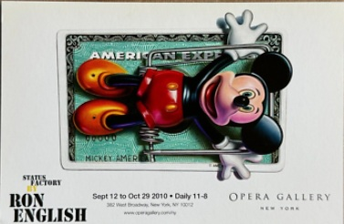

Exhibitions
Big Picture Pop, Opera Gallery, New York, New York, US, November 29–late December 2007.
Literature
Ron English & Morgan Spurlock, Abject Expressionism: The Art of Ron English (San Francisco: Last Gasp, 2007), p. 176. ISBN 978-0867196894.
Ron English, Ron English’s Stickable Art Offenses: A Sticker Book, designed by Randy Johnson (San Francisco: Last Gasp, 2011), 100 pp., ISBN 978-0867197594.
Ron English, Death and the Eternal Forever (Korero Press, 2014), p. 134. ISBN 978-0957664920.
Ron English, Status Factory: The Art of Ron English (San Francisco: Last Gasp of San Francisco, 2014), p. 149. ISBN 978-0867197891.
Notes
This work is documented in the exhibition catalogue for Big Picture Pop and was later reproduced on the show card for Status Factory.
The composition references Mickey Mouse, created by Walt Disney and Ub Iwerks.
A modified version of the image was used for the poster of the documentary film What Would Jesus Buy? (2007), directed by Rob VanAlkemade and produced by Morgan Spurlock.
One external online-circulation page lists conflicting dates for American Depress; this catalogue record retains 2007 as the work date.
Ancillary Documentation


